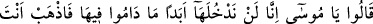

dedi: Onların üzerine kapıdan girin; oraya girdiğiniz zaman muhakkak siz gâlip
gelirsiniz. Eğer mü’minler iseniz ancak Allah’a güvenin.
Düşmandan değil yalnız Allah’tan “korkanlardan”, O’nun emir ve nehiylerine aykırı
davranmaktan sakınanlardan, “Allah’ın” işlerinde sabit ve vâkıf kıldığı ve vaadine
güvenmekle “kendilerine lütufda bulunduğu iki kişi şöyle dedi:” Sanki: “Onlar bu
hususta ittifak ettiler mi yoksa bâzıları buna karşı mı çıktı?” diye bir soru sorulmış da
cevap olarak böyle denilmiştir. Bu iki adam, Kâleb ve Yûşa’dır.
“Onların üzerine kapıdan girin.” Yani zorbaların yurtlarının kapısından girin. O
belde Eriha’dır. Yani, onlar beldelerinde iken oraya kapıdan girin ansızın dar yerde
onlara saldırarak çöle çıkıp da sizinle meydan savaşı yapmalarını önleyin. “Oraya”,
yani yurtlarının kapısından onlar içeride oldukları halde “girdiğiniz zaman”
savaşmaksızın “muhakkak ki siz galip gelirsiniz.” Çünkü biz her ne kadar cüsseleri iri
olsa da onların kalplerinin zayıf olduğunu müşâhede ettik. O halde onlardan korkmayın
ve dar geçitlerde onlara saldırın. Çünkü onlar bu gibi yerlerde savunmaya ve kaçmaya
fırsat bulamazlar.
“Eğer” vaadini tasdik edenler olarak Allah Teâlâ’ya inanan “mü’minler iseniz”
çünkü îman kesin olarak O’na tevekkülü gerektirir. Sebepleri yerine getirdikten sonra
özellikle “ancak Allah’a güvenin.” o sebeplere îtimad etmeyin. Çünkü sebepler
tesirden çok uzaktadır. Tesir, Azîz ve Kadîr olan Allah’ın yardımıyladır.
24- Dediler ki: «Ey Mûsâ! Onlar orada bulundukları müddetçe biz oraya asla
girmeyiz; şu halde sen ve Rabbin gidin savaşın; biz burada oturacağız.»
Bu iki adama aldırış etmeksizin ilk sözlerinde ısrar ederek “dediler ki: Ey Mûsâ!
onlar orada” zorbalar kendi topraklarında “bulundukları müddetçe biz oraya”
zorbaların toprağına “aslâ” yani uzun süre “girmeyiz.”
“Şu halde sen ve Rabbin gidin, savaşın” yani onlarla savaşın. Onlar bu sözü Allah
Teâlâ’yı ve Rasûlü’nü hakir görmek ve alaya almak, onlara aldırış etmediklerini
göstermek için söylemişlerdir. Yoksa gerçekten bu sözle Allah’ın ve peygamberinin
oraya gitmesini kastetmemişlerdir. Çünkü insan sûretinde olan bir kişi eğer
Mücessime’den değilse Allah’ın gidip savaşmasının gerçekleşeceğine inanmaz.
“Biz burada oturacağız.” Yani ne ileri, ne de geri gideceğiz, dediler.